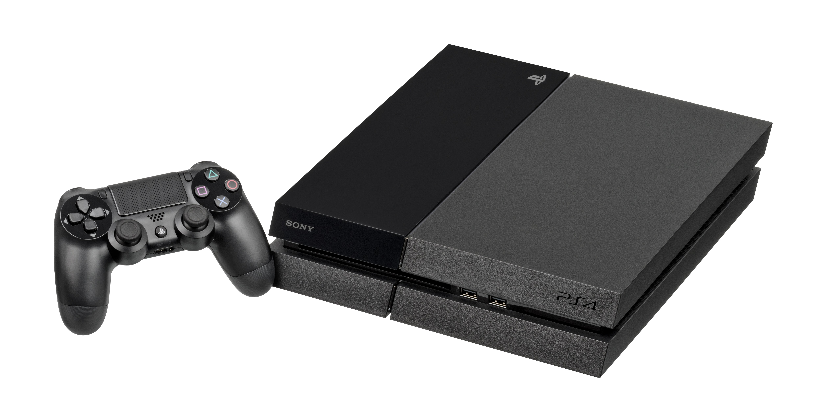

The Autopsy Report · Device #016
The PlayStation 4
The console that bet everything on one AMD chip — and won. We haven't opened one yet, so this report is built from the public record: Sony's FCC filing, independent teardowns, and the silicon inside.
What is this thing?
The PlayStation 4 is Sony's eighth-generation home console, launched November 15, 2013 in North America. Where the PS3 used exotic custom silicon, the PS4 went the opposite direction: a single AMD "Jaguar" APU (processor and graphics on one chip), 8 GB of fast GDDR5 memory, and a standard 2.5-inch hard drive you could swap yourself. The bet was that familiar PC-like architecture would make developers' lives easy — it worked. Wikipedia
This report covers the whole family: the launch CUH-1000 series, the quieter CUH-1200, the Slim (CUH-2000, 2016), and the Pro (CUH-7000, 2016) — with the launch unit's FCC filing as the representative paperwork: AK8CUH100C1. FCC filing
Not yet on our bench
No unit of ours has been opened for this report. Everything below comes from public records: the FCC filing, independent teardowns, and published specifications. The public-record facts are as complete as we could make them; what awaits the bench is everything that requires our hands on our hardware — our own photos, our own measurements, and confirmation of exactly which CUH revision our future unit is. When a PS4 lands on the bench, the thin spots below are exactly where we'll start.
A short history
- November 15, 2013Sony launches the PS4 (CUH-1000) in North America. The AMD APU and developer-friendly design make it the easy pick for studios — and for players. Wikipedia
- 2013The launch unit clears the FCC under AK8CUH100C1 — Wi-Fi, Bluetooth, and emissions documented. (One source dates the approval to July 22, 2013; we haven't independently verified that date against the filing itself.) FCC filing
- 2016Two new models at once: the PS4 Slim (CUH-2000, smaller and more efficient) and the PS4 Pro (CUH-7000, with a much faster GPU for 4K output). Wikipedia
- 2013 – 2022The PS4 sells over 117 million units — Sony's second-best console ever, and the machine that defined a generation. Wikipedia
The outside
A slanted black slab, split by a light bar that glows blue, white, or orange depending on what the console is doing. The Slim rounds the edges; the Pro adds a third layer to the sandwich. What the photo can't show: the satisfying slide-off top panel that hides the user-replaceable hard drive.

The board
The PS4's main board is dominated by one large chip — the AMD APU — surrounded by sixteen GDDR5 memory packages (8 GB total), a Macronix serial flash chip holding the firmware, and a Marvell wireless chip. It's a clean, PC-like layout: one big processor, memory all around, standard connectors. Technical overview The exact board revision, date codes, and memory vendor mix of our future unit are unknown until we open one ourselves.
Under the microscope: the chips
What's on the board, what each part does, and how sure we are. Confirmed means primary evidence only — an FCC exhibit, a manufacturer manual or datasheet, or an official announcement. Likely means corroborated secondary or public-teardown evidence. Markings below come from public teardowns of launch-series boards; Slim and Pro boards differ.
| Chip | What it does | How we know | Dig deeper |
|---|---|---|---|
| AMD CXD90026G 8-core Jaguar APU |
The whole system on one chip: eight x86 CPU cores plus Radeon graphics (1.84 TFLOPS). | Likely Marking documented in public teardowns; architecture per the published specs. | Technical overview |
| Macronix MX25L25635FMI-10G 256-Mbit serial flash |
Holds the firmware — the code that wakes the console up. | Likely Marking documented in public teardowns. | Technical overview |
| Samsung K4G41325FC-HC03 ×16 GDDR5, 8 GB total |
System memory — sixteen packages ringing the APU, shared between CPU and graphics. | Likely Marking documented in public teardowns; vendor and density vary by revision. | Technical overview |
| Marvell 88W8797 | Wi-Fi and Bluetooth radio — the chip behind the FCC filing's wireless tests. | Likely Marking documented in public teardowns. | FCC filing |
The APU itself is custom Sony/AMD silicon with no public datasheet — another industry documentation gap. Awaiting the bench: our unit's exact CUH revision, its memory vendor mix, and the power-supply section.
The government's file on this box
The launch PS4's representative filing is FCC ID AK8CUH100C1 — Wi-Fi, Bluetooth, and radiated-emissions tests on file, with setup photographs of the test configuration. FCC filing One honest gap: no dedicated internal-photo exhibit for this grant has surfaced in our research — the filing's photo set covers the test setup, not the board. (One secondary source dates the approval to July 22, 2013; treat that date as unverified until checked against the filing.) Browse it: AK8CUH100C1 on fccid.io.
Debug and service modes
Sony publishes an official Safe Mode for the PS4 — the legitimate, manufacturer-documented recovery path. The procedure, from PlayStation's own support pages: power the console fully off, then press and hold the power button — release it after the second beep (about seven seconds) — and connect a controller with a USB cable. From the Safe Mode menu you can restart, change resolution, update or reinstall the system software, rebuild the database, and — as the last resort — initialize (factory-reset) the console. PlayStation support This is a legitimate, manufacturer-published recovery procedure — the kind of thing we document, not the kind we defeat. We haven't tested it on our own hardware, because we don't have any yet.
What public records show
The public record gives us the PS4 family's full biography: launch and revision dates, the AMD APU architecture, the 8 GB GDDR5 configuration, the launch FCC filing, and an official Safe Mode procedure. What it does not give us is anything that only exists inside a specific unit — CUH revision, board date codes, memory vendor mix, or how the Slim and Pro boards differ from the launch board in our hands. That's the bench's job.
What we haven't done
- We haven't opened, photographed, or measured a PS4 of our own.
- We haven't confirmed which CUH revision our future unit will be.
- We haven't tested Safe Mode on our own hardware.
- We haven't verified the chip markings against a physical board.
- The photo above is a freely licensed stock image, credited in full — not our hardware.
By the numbers
- Model range: CUH-1000 (launch) through CUH-2200 (Slim); Pro is CUH-7000
- FCC ID: AK8CUH100C1 (launch unit; setup photos on file, no internal-photo exhibit surfaced)
- APU: AMD CXD90026G — 8-core Jaguar x86 + Radeon graphics
- Memory: 8 GB GDDR5 (16 packages)
- Storage: user-replaceable 2.5-inch hard drive
- Launched: November 15, 2013 (North America)
- Units sold: over 117 million
Words to know
Every term this page uses, in plain English. No prior knowledge required.
- APU
- AMD's name for a chip that combines the processor and the graphics on one piece of silicon. The PS4's whole brain is one APU.
- Jaguar
- The low-power x86 CPU design inside the PS4's APU — eight small cores instead of a few big ones.
- GDDR5
- Graphics memory — fast RAM of the kind graphics cards use. The PS4 gives all 8 GB to both the CPU and GPU to share.
- Safe Mode
- Sony's official recovery screen: hold power to the second beep, then repair, update, or reset the console.
- Serial flash
- A small, slow chip that holds the firmware — the first code the console runs when you press power.
- FCC ID
- The ID the FCC assigns to each approved wireless product. Punch it into fccid.io and the whole public filing comes up.
Sources & confidence
- FCC ID AK8CUH100C1: the FCC filing record itself. High confidence.
- Chip markings (AMD CXD90026G, Macronix serial flash, Samsung GDDR5, Marvell 88W8797): public teardowns with photographs. Medium-high confidence; revisions differ.
- Launch/revision dates, sales figures, APU architecture: published technical overviews. High confidence in the facts, medium in any single source.
- Safe Mode procedure: PlayStation's official support pages. High confidence in the procedure's existence; untested by us.
- The 2013-07-22 approval date and any internal-photo exhibit: unverified in our research — stated as gaps, not facts.
- Anything not listed here is unknown until the bench says otherwise. We'll say so, out loud, when that's the case.
We publish no firmware, serials, keys, or private data. This report uses only public records plus a freely licensed stock photo.
Legal note. BareBoard is an educational project. We don't publish, host, or distribute firmware, keys, passwords, or credentials. Product names and trademarks belong to their respective owners and appear here only to identify the hardware. If you believe anything here infringes your rights, contact us and we'll address it promptly.